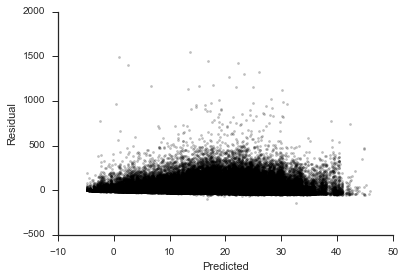

This is part 3 in my series on writing modern idiomatic pandas.
Indexes can be a difficult concept to grasp at first.
I suspect this is partly becuase they're somewhat peculiar to pandas.
These aren't like the indexes put on relational database tables for performance optimizations.
Rather, they're more like the row_labels of an R DataFrame, but much more capable.
Indexes offer
- metadata container
- easy label-based row selection
- easy label-based alignment in operations
- label-based concatenation
To demonstrate these, we'll first fetch some more data. This will be weather data from sensors at a bunch of airports across the US. See here for the example scraper I based this off of.
%matplotlib inline
import json
import glob
import datetime
from io import StringIO
import requests
import numpy as np
import pandas as pd
import seaborn as sns
import matplotlib.pyplot as plt
sns.set_style('ticks')
# States are broken into networks. The networks have a list of ids, each representing a station.
# We will take that list of ids and pass them as query parameters to the URL we built up ealier.
states = """AK AL AR AZ CA CO CT DE FL GA HI IA ID IL IN KS KY LA MA MD ME
MI MN MO MS MT NC ND NE NH NJ NM NV NY OH OK OR PA RI SC SD TN TX UT VA VT
WA WI WV WY""".split()
# IEM has Iowa AWOS sites in its own labeled network
networks = ['AWOS'] + ['{}_ASOS'.format(state) for state in states]
def get_weather(stations, start=pd.Timestamp('2014-01-01'),
end=pd.Timestamp('2014-01-31')):
'''
Fetch weather data from MESONet between ``start`` and ``stop``.
'''
url = ("http://mesonet.agron.iastate.edu/cgi-bin/request/asos.py?"
"&data=tmpf&data=relh&data=sped&data=mslp&data=p01i&data=vsby&data=gust_mph&data=skyc1&data=skyc2&data=skyc3"
"&tz=Etc/UTC&format=comma&latlon=no"
"&{start:year1=%Y&month1=%m&day1=%d}"
"&{end:year2=%Y&month2=%m&day2=%d}&{stations}")
stations = "&".join("station=%s" % s for s in stations)
weather = (pd.read_csv(url.format(start=start, end=end, stations=stations),
comment="#")
.rename(columns={"valid": "date"})
.rename(columns=str.strip)
.assign(date=lambda df: pd.to_datetime(df['date']))
.set_index(["station", "date"])
.sort_index())
float_cols = ['tmpf', 'relh', 'sped', 'mslp', 'p01i', 'vsby', "gust_mph"]
weather[float_cols] = weather[float_cols].apply(pd.to_numeric, errors="corce")
return weather
def get_ids(network):
url = "http://mesonet.agron.iastate.edu/geojson/network.php?network={}"
r = requests.get(url.format(network))
md = pd.io.json.json_normalize(r.json()['features'])
md['network'] = network
return md
Talk briefly about the gem of a method that is json_normalize.
url = "http://mesonet.agron.iastate.edu/geojson/network.php?network={}"
r = requests.get(url.format("AWOS"))
js = r.json()
js['features'][:2]
[{'geometry': {'coordinates': [-94.2723694444, 43.0796472222],
'type': 'Point'},
'id': 'AXA',
'properties': {'sid': 'AXA', 'sname': 'ALGONA'},
'type': 'Feature'},
{'geometry': {'coordinates': [-93.569475, 41.6878083333], 'type': 'Point'},
'id': 'IKV',
'properties': {'sid': 'IKV', 'sname': 'ANKENY'},
'type': 'Feature'}]
pd.DataFrame(js['features']).head().to_html()
| geometry | id | properties | type | |
|---|---|---|---|---|
| 0 | {\'coordinates\': [-94.2723694444, 43.0796472222... | AXA | {\'sname\': \'ALGONA\', \'sid\': \'AXA\'} | Feature |
| 1 | {\'coordinates\': [-93.569475, 41.6878083333], \'... | IKV | {\'sname\': \'ANKENY\', \'sid\': \'IKV\'} | Feature |
| 2 | {\'coordinates\': [-95.0465277778, 41.4058805556... | AIO | {\'sname\': \'ATLANTIC\', \'sid\': \'AIO\'} | Feature |
| 3 | {\'coordinates\': [-94.9204416667, 41.6993527778... | ADU | {\'sname\': \'AUDUBON\', \'sid\': \'ADU\'} | Feature |
| 4 | {\'coordinates\': [-93.848575, 42.0485694444], \'... | BNW | {\'sname\': \'BOONE MUNI\', \'sid\': \'BNW\'} | Feature |
js['features'][0]
{
'geometry': {
'coordinates': [-94.2723694444, 43.0796472222],
'type': 'Point'
},
'id': 'AXA',
'properties': {
'sid': 'AXA',
'sname': 'ALGONA'
},
'type': 'Feature'
}
js['features']
[{'geometry': {'coordinates': [-94.2723694444, 43.0796472222],
'type': 'Point'},
'id': 'AXA',
'properties': {'sid': 'AXA', 'sname': 'ALGONA'},
'type': 'Feature'},
{'geometry': {'coordinates': [-93.569475, 41.6878083333], 'type': 'Point'},
'id': 'IKV',
'properties': {'sid': 'IKV', 'sname': 'ANKENY'},
'type': 'Feature'},
{'geometry': {'coordinates': [-95.0465277778, 41.4058805556],
'type': 'Point'},
'id': 'AIO',
'properties': {'sid': 'AIO', 'sname': 'ATLANTIC'},
'type': 'Feature'},
{'geometry': {'coordinates': [-94.9204416667, 41.6993527778],
'type': 'Point'},
'id': 'ADU',
'properties': {'sid': 'ADU', 'sname': 'AUDUBON'},
'type': 'Feature'},
{'geometry': {'coordinates': [-93.848575, 42.0485694444], 'type': 'Point'},
'id': 'BNW',
'properties': {'sid': 'BNW', 'sname': 'BOONE MUNI'},
'type': 'Feature'},
{'geometry': {'coordinates': [-94.7888805556, 42.0443611111],
'type': 'Point'},
'id': 'CIN',
'properties': {'sid': 'CIN', 'sname': 'CARROLL'},
'type': 'Feature'},
{'geometry': {'coordinates': [-92.8983388889, 40.6831805556],
'type': 'Point'},
'id': 'TVK',
'properties': {'sid': 'TVK', 'sname': 'Centerville'},
'type': 'Feature'},
{'geometry': {'coordinates': [-93.3607694444, 41.0184305556],
'type': 'Point'},
'id': 'CNC',
'properties': {'sid': 'CNC', 'sname': 'CHARITON'},
'type': 'Feature'},
{'geometry': {'coordinates': [-92.6132222222, 43.0730055556],
'type': 'Point'},
'id': 'CCY',
'properties': {'sid': 'CCY', 'sname': 'CHARLES CITY'},
'type': 'Feature'},
{'geometry': {'coordinates': [-95.553775, 42.7304194444], 'type': 'Point'},
'id': 'CKP',
'properties': {'sid': 'CKP', 'sname': 'Cherokee'},
'type': 'Feature'},
{'geometry': {'coordinates': [-95.0222722222, 40.7241527778],
'type': 'Point'},
'id': 'ICL',
'properties': {'sid': 'ICL', 'sname': 'CLARINDA'},
'type': 'Feature'},
{'geometry': {'coordinates': [-93.7592583333, 42.7430416667],
'type': 'Point'},
'id': 'CAV',
'properties': {'sid': 'CAV', 'sname': 'CLARION'},
'type': 'Feature'},
{'geometry': {'coordinates': [-90.332796, 41.829504], 'type': 'Point'},
'id': 'CWI',
'properties': {'sid': 'CWI', 'sname': 'CLINTON'},
'type': 'Feature'},
{'geometry': {'coordinates': [-95.7604083333, 41.2611111111],
'type': 'Point'},
'id': 'CBF',
'properties': {'sid': 'CBF', 'sname': 'COUNCIL BLUFFS'},
'type': 'Feature'},
{'geometry': {'coordinates': [-94.3607972222, 41.0187888889],
'type': 'Point'},
'id': 'CSQ',
'properties': {'sid': 'CSQ', 'sname': 'CRESTON'},
'type': 'Feature'},
{'geometry': {'coordinates': [-91.7433138889, 43.2755194444],
'type': 'Point'},
'id': 'DEH',
'properties': {'sid': 'DEH', 'sname': 'DECORAH'},
'type': 'Feature'},
{'geometry': {'coordinates': [-95.3799888889, 41.9841944444],
'type': 'Point'},
'id': 'DNS',
'properties': {'sid': 'DNS', 'sname': 'DENISON'},
'type': 'Feature'},
{'geometry': {'coordinates': [-91.9834111111, 41.0520888889],
'type': 'Point'},
'id': 'FFL',
'properties': {'sid': 'FFL', 'sname': 'FAIRFIELD'},
'type': 'Feature'},
{'geometry': {'coordinates': [-93.6236694444, 43.2323166667],
'type': 'Point'},
'id': 'FXY',
'properties': {'sid': 'FXY', 'sname': 'Forest City'},
'type': 'Feature'},
{'geometry': {'coordinates': [-94.203203, 42.549741], 'type': 'Point'},
'id': 'FOD',
'properties': {'sid': 'FOD', 'sname': 'FORT DODGE'},
'type': 'Feature'},
{'geometry': {'coordinates': [-91.3267166667, 40.6614833333],
'type': 'Point'},
'id': 'FSW',
'properties': {'sid': 'FSW', 'sname': 'FORT MADISON'},
'type': 'Feature'},
{'geometry': {'coordinates': [-92.7331972222, 41.7097305556],
'type': 'Point'},
'id': 'GGI',
'properties': {'sid': 'GGI', 'sname': 'Grinnell'},
'type': 'Feature'},
{'geometry': {'coordinates': [-95.3354555556, 41.5834194444],
'type': 'Point'},
'id': 'HNR',
'properties': {'sid': 'HNR', 'sname': 'HARLAN'},
'type': 'Feature'},
{'geometry': {'coordinates': [-91.9504, 42.4544277778], 'type': 'Point'},
'id': 'IIB',
'properties': {'sid': 'IIB', 'sname': 'INDEPENDENCE'},
'type': 'Feature'},
{'geometry': {'coordinates': [-93.2650805556, 42.4690972222],
'type': 'Point'},
'id': 'IFA',
'properties': {'sid': 'IFA', 'sname': 'Iowa Falls'},
'type': 'Feature'},
{'geometry': {'coordinates': [-91.4273916667, 40.4614611111],
'type': 'Point'},
'id': 'EOK',
'properties': {'sid': 'EOK', 'sname': 'KEOKUK MUNI'},
'type': 'Feature'},
{'geometry': {'coordinates': [-93.1113916667, 41.2984472222],
'type': 'Point'},
'id': 'OXV',
'properties': {'sid': 'OXV', 'sname': 'Knoxville'},
'type': 'Feature'},
{'geometry': {'coordinates': [-96.19225, 42.775375], 'type': 'Point'},
'id': 'LRJ',
'properties': {'sid': 'LRJ', 'sname': 'LE MARS'},
'type': 'Feature'},
{'geometry': {'coordinates': [-91.1604555556, 42.2203611111],
'type': 'Point'},
'id': 'MXO',
'properties': {'sid': 'MXO', 'sname': 'MONTICELLO MUNI'},
'type': 'Feature'},
{'geometry': {'coordinates': [-91.5122277778, 40.9452527778],
'type': 'Point'},
'id': 'MPZ',
'properties': {'sid': 'MPZ', 'sname': 'MOUNT PLEASANT'},
'type': 'Feature'},
{'geometry': {'coordinates': [-91.140575, 41.3669944444], 'type': 'Point'},
'id': 'MUT',
'properties': {'sid': 'MUT', 'sname': 'MUSCATINE'},
'type': 'Feature'},
{'geometry': {'coordinates': [-93.0190416667, 41.6701111111],
'type': 'Point'},
'id': 'TNU',
'properties': {'sid': 'TNU', 'sname': 'NEWTON MUNI'},
'type': 'Feature'},
{'geometry': {'coordinates': [-91.9759888889, 42.6831388889],
'type': 'Point'},
'id': 'OLZ',
'properties': {'sid': 'OLZ', 'sname': 'OELWEIN'},
'type': 'Feature'},
{'geometry': {'coordinates': [-96.0605861111, 42.9894916667],
'type': 'Point'},
'id': 'ORC',
'properties': {'sid': 'ORC', 'sname': 'Orange City'},
'type': 'Feature'},
{'geometry': {'coordinates': [-93.6876138889, 41.0471722222],
'type': 'Point'},
'id': 'I75',
'properties': {'sid': 'I75', 'sname': 'Osceola'},
'type': 'Feature'},
{'geometry': {'coordinates': [-92.4918666667, 41.227275], 'type': 'Point'},
'id': 'OOA',
'properties': {'sid': 'OOA', 'sname': 'Oskaloosa'},
'type': 'Feature'},
{'geometry': {'coordinates': [-92.9431083333, 41.3989138889],
'type': 'Point'},
'id': 'PEA',
'properties': {'sid': 'PEA', 'sname': 'PELLA'},
'type': 'Feature'},
{'geometry': {'coordinates': [-94.1637083333, 41.8277916667],
'type': 'Point'},
'id': 'PRO',
'properties': {'sid': 'PRO', 'sname': 'Perry'},
'type': 'Feature'},
{'geometry': {'coordinates': [-95.2624111111, 41.01065], 'type': 'Point'},
'id': 'RDK',
'properties': {'sid': 'RDK', 'sname': 'RED OAK'},
'type': 'Feature'},
{'geometry': {'coordinates': [-95.8353138889, 43.2081611111],
'type': 'Point'},
'id': 'SHL',
'properties': {'sid': 'SHL', 'sname': 'SHELDON'},
'type': 'Feature'},
{'geometry': {'coordinates': [-95.4112333333, 40.753275], 'type': 'Point'},
'id': 'SDA',
'properties': {'sid': 'SDA', 'sname': 'SHENANDOAH MUNI'},
'type': 'Feature'},
{'geometry': {'coordinates': [-95.2399194444, 42.5972277778],
'type': 'Point'},
'id': 'SLB',
'properties': {'sid': 'SLB', 'sname': 'Storm Lake'},
'type': 'Feature'},
{'geometry': {'coordinates': [-92.0248416667, 42.2175777778],
'type': 'Point'},
'id': 'VTI',
'properties': {'sid': 'VTI', 'sname': 'VINTON'},
'type': 'Feature'},
{'geometry': {'coordinates': [-91.6748111111, 41.2751444444],
'type': 'Point'},
'id': 'AWG',
'properties': {'sid': 'AWG', 'sname': 'WASHINGTON'},
'type': 'Feature'},
{'geometry': {'coordinates': [-93.8690777778, 42.4392305556],
'type': 'Point'},
'id': 'EBS',
'properties': {'sid': 'EBS', 'sname': 'Webster City'},
'type': 'Feature'}]
stations = pd.io.json.json_normalize(js['features']).id
url = ("http://mesonet.agron.iastate.edu/cgi-bin/request/asos.py?"
"&data=tmpf&data=relh&data=sped&data=mslp&data=p01i&data=vsby&data=gust_mph&data=skyc1&data=skyc2&data=skyc3"
"&tz=Etc/UTC&format=comma&latlon=no"
"&{start:year1=%Y&month1=%m&day1=%d}"
"&{end:year2=%Y&month2=%m&day2=%d}&{stations}")
stations = "&".join("station=%s" % s for s in stations)
start = pd.Timestamp('2014-01-01')
end=pd.Timestamp('2014-01-31')
weather = (pd.read_csv(url.format(start=start, end=end, stations=stations),
comment="#"))
import os
ids = pd.concat([get_ids(network) for network in networks], ignore_index=True)
gr = ids.groupby('network')
os.makedirs("weather", exist_ok=True)
for i, (k, v) in enumerate(gr):
print("{}/{}".format(i, len(network)), end='\r')
weather = get_weather(v['id'])
weather.to_csv("weather/{}.csv".format(k))
weather = pd.concat([
pd.read_csv(f, parse_dates='date', index_col=['station', 'date'])
for f in glob.glob('weather/*.csv')])
weather.to_hdf("weather.h5", "weather")
weather = pd.read_hdf("weather.h5", "weather").sort_index()
weather.head()
| tmpf | relh | sped | mslp | p01i | vsby | gust_mph | skyc1 | skyc2 | skyc3 | ||
|---|---|---|---|---|---|---|---|---|---|---|---|
| station | date | ||||||||||
| 01M | 2014-01-01 00:15:00 | 33.80 | 85.86 | 0.0 | NaN | 0.0 | 10.0 | NaN | CLR | M | M |
| 2014-01-01 00:35:00 | 33.44 | 87.11 | 0.0 | NaN | 0.0 | 10.0 | NaN | CLR | M | M | |
| 2014-01-01 00:55:00 | 32.54 | 90.97 | 0.0 | NaN | 0.0 | 10.0 | NaN | CLR | M | M | |
| 2014-01-01 01:15:00 | 31.82 | 93.65 | 0.0 | NaN | 0.0 | 10.0 | NaN | CLR | M | M | |
| 2014-01-01 01:35:00 | 32.00 | 92.97 | 0.0 | NaN | 0.0 | 10.0 | NaN | CLR | M | M |
OK, that was a bit of work. Here's a plot to reward ourselves.
airports = ['DSM', 'ORD', 'JFK', 'PDX']
g = sns.FacetGrid(weather.sort_index().loc[airports].reset_index(),
col='station', hue='station', col_wrap=2, size=4)
g.map(sns.regplot, 'sped', 'gust_mph')
plt.savefig('../content/images/indexes_wind_gust_facet.png');
airports = ['DSM', 'ORD', 'JFK', 'PDX']
g = sns.FacetGrid(weather.sort_index().loc[airports].reset_index(),
col='station', hue='station', col_wrap=2, size=4)
g.map(sns.regplot, 'sped', 'gust_mph')
plt.savefig('../content/images/indexes_wind_gust_facet.svg', transparent=True);

Set Operations
Indexes are set-like (technically multisets, since you can have duplicates), so they support most python set operations. Indexes are immutable so you won't find any of the inplace set operations.
One other difference is that since Indexes are also array like, you can't use some infix operators like - for difference. If you have a numeric index it is unclear whether you intend to perform math operations or set operations.
You can use & for intersetion, | for union, and ^ for symmetric difference though, since there's no ambiguity.
For example, lets find the set of airports that we have weather and flight information on. Since weather had a MultiIndex of airport,datetime, we'll use the levels attribute to get at the airport data, separate from the date data.
# Bring in the flights data
flights = pd.read_hdf('flights.h5', 'flights')
weather_locs = weather.index.levels[0]
# The `categories` attribute of a Categorical is an Index
origin_locs = flights.origin.cat.categories
dest_locs = flights.dest.cat.categories
airports = weather_locs & origin_locs & dest_locs
airports
Index(['ABE', 'ABI', 'ABQ', 'ABR', 'ABY', 'ACT', 'ACV', 'AEX', 'AGS', 'ALB',
...
'TUL', 'TUS', 'TVC', 'TWF', 'TXK', 'TYR', 'TYS', 'VLD', 'VPS', 'XNA'],
dtype='object', length=267)
print("Weather, no flights:\n\t", weather_locs.difference(origin_locs | dest_locs), end='\n\n')
print("Flights, no weather:\n\t", (origin_locs | dest_locs).difference(weather_locs), end='\n\n')
print("Dropped Stations:\n\t", (origin_locs | dest_locs) ^ weather_locs)
Weather, no flights:
Index(['01M', '04V', '04W', '05U', '06D', '08D', '0A9', '0CO', '0E0', '0F2',
...
'Y50', 'Y51', 'Y63', 'Y70', 'YIP', 'YKM', 'YKN', 'YNG', 'ZPH', 'ZZV'],
dtype='object', length=1909)
Flights, no weather:
Index(['ADK', 'ADQ', 'ANC', 'BET', 'BKG', 'BQN', 'BRW', 'CDV', 'CLD', 'FAI',
'FCA', 'GUM', 'HNL', 'ITO', 'JNU', 'KOA', 'KTN', 'LIH', 'MQT', 'OGG',
'OME', 'OTZ', 'PPG', 'PSE', 'PSG', 'SCC', 'SCE', 'SIT', 'SJU', 'STT',
'STX', 'WRG', 'YAK', 'YUM'],
dtype='object')
Dropped Stations:
Index(['01M', '04V', '04W', '05U', '06D', '08D', '0A9', '0CO', '0E0', '0F2',
...
'Y63', 'Y70', 'YAK', 'YIP', 'YKM', 'YKN', 'YNG', 'YUM', 'ZPH', 'ZZV'],
dtype='object', length=1943)
Flavors
Pandas has many subclasses of the regular Index, each tailored to a specific kind of data.
Most of the time these will be created for you automatically, so you don't have to worry about which one to choose.
IndexInt64IndexRangeIndex(Memory-saving special case ofInt64Index)FloatIndexDatetimeIndex: Datetime64[ns] precision dataPeriodIndex: Regularly-spaced, arbitrary precision datetime data.TimedeltaIndex: Timedelta dataCategoricalIndex:
Some of these are purely optimizations, others use information about the data to provide additional methods. And while sometimes you might work with indexes directly (like the set operations above), most of they time you'll be operating on a Series or DataFrame, which in turn makes use of its Index.
Row Slicing
We saw in part one that they're great for making row subsetting as easy as column subsetting.
weather.loc['DSM'].head()
| tmpf | relh | sped | mslp | p01i | vsby | gust_mph | skyc1 | skyc2 | skyc3 | |
|---|---|---|---|---|---|---|---|---|---|---|
| date | ||||||||||
| 2014-01-01 00:54:00 | 10.94 | 72.79 | 10.3 | 1024.9 | 0.0 | 10.0 | NaN | FEW | M | M |
| 2014-01-01 01:54:00 | 10.94 | 72.79 | 11.4 | 1025.4 | 0.0 | 10.0 | NaN | OVC | M | M |
| 2014-01-01 02:54:00 | 10.94 | 72.79 | 8.0 | 1025.3 | 0.0 | 10.0 | NaN | BKN | M | M |
| 2014-01-01 03:54:00 | 10.94 | 72.79 | 9.1 | 1025.3 | 0.0 | 10.0 | NaN | OVC | M | M |
| 2014-01-01 04:54:00 | 10.04 | 72.69 | 9.1 | 1024.7 | 0.0 | 10.0 | NaN | BKN | M | M |
Without indexes we'd probably resort to boolean masks.
weather2 = weather.reset_index()
weather2[weather2['station'] == 'DSM'].head()
| station | date | tmpf | relh | sped | mslp | p01i | vsby | gust_mph | skyc1 | skyc2 | skyc3 | |
|---|---|---|---|---|---|---|---|---|---|---|---|---|
| 884855 | DSM | 2014-01-01 00:54:00 | 10.94 | 72.79 | 10.3 | 1024.9 | 0.0 | 10.0 | NaN | FEW | M | M |
| 884856 | DSM | 2014-01-01 01:54:00 | 10.94 | 72.79 | 11.4 | 1025.4 | 0.0 | 10.0 | NaN | OVC | M | M |
| 884857 | DSM | 2014-01-01 02:54:00 | 10.94 | 72.79 | 8.0 | 1025.3 | 0.0 | 10.0 | NaN | BKN | M | M |
| 884858 | DSM | 2014-01-01 03:54:00 | 10.94 | 72.79 | 9.1 | 1025.3 | 0.0 | 10.0 | NaN | OVC | M | M |
| 884859 | DSM | 2014-01-01 04:54:00 | 10.04 | 72.69 | 9.1 | 1024.7 | 0.0 | 10.0 | NaN | BKN | M | M |
Slightly less convenient, but still doable.
Indexes for Easier Arithmetic, Analysis
It's nice to have your metadata (labels on each observation) next to you actual values. But if you store them in an array, they'll get in the way. Say we wanted to translate the farenheit temperature to celcius.
# With indecies
temp = weather['tmpf']
c = (temp - 32) * 5 / 9
c.to_frame()
| tmpf | ||
|---|---|---|
| station | date | |
| 01M | 2014-01-01 00:15:00 | 1.0 |
| 2014-01-01 00:35:00 | 0.8 | |
| 2014-01-01 00:55:00 | 0.3 | |
| 2014-01-01 01:15:00 | -0.1 | |
| 2014-01-01 01:35:00 | 0.0 | |
| ... | ... | ... |
| ZZV | 2014-01-30 19:53:00 | -2.8 |
| 2014-01-30 20:53:00 | -2.2 | |
| 2014-01-30 21:53:00 | -2.2 | |
| 2014-01-30 22:53:00 | -2.8 | |
| 2014-01-30 23:53:00 | -1.7 |
3303647 rows × 1 columns
# without
temp2 = weather.reset_index()[['station', 'date', 'tmpf']]
temp2['tmpf'] = (temp2['tmpf'] - 32) * 5 / 9
temp2.head()
| station | date | tmpf | |
|---|---|---|---|
| 0 | 01M | 2014-01-01 00:15:00 | 1.0 |
| 1 | 01M | 2014-01-01 00:35:00 | 0.8 |
| 2 | 01M | 2014-01-01 00:55:00 | 0.3 |
| 3 | 01M | 2014-01-01 01:15:00 | -0.1 |
| 4 | 01M | 2014-01-01 01:35:00 | 0.0 |
Again, not terrible, but not as good.
And, what if you had wanted to keep farenheit around as well, instead of overwriting it like we did?
Then you'd need to make a copy of everything, including the station and date columns.
We don't have that problem, since indexes are immutable and safely shared between DataFrames / Series.
temp.index is c.index
True
Indexes for Alignment
I've saved the best for last. Automatic alignment, or reindexing, is fundamental to pandas.
All binary operations (add, multiply, etc...) between Series/DataFrames first align and then proceed.
Let's suppose we have hourly observations on temperature and windspeed. And suppose some of the observations were invalid, and not reported (simulated below by sampling from the full dataset). We'll assume the missing windspeed observations were potentially different from the missing temperature observations.
dsm = weather.loc['DSM']
hourly = dsm.resample('H').mean()
temp = hourly['tmpf'].sample(frac=.5, random_state=1).sort_index()
sped = hourly['sped'].sample(frac=.5, random_state=2).sort_index()
temp.head().to_frame()
| tmpf | |
|---|---|
| date | |
| 2014-01-01 00:00:00 | 10.94 |
| 2014-01-01 02:00:00 | 10.94 |
| 2014-01-01 03:00:00 | 10.94 |
| 2014-01-01 04:00:00 | 10.04 |
| 2014-01-01 05:00:00 | 10.04 |
sped.head()
date
2014-01-01 01:00:00 11.4
2014-01-01 02:00:00 8.0
2014-01-01 03:00:00 9.1
2014-01-01 04:00:00 9.1
2014-01-01 05:00:00 10.3
Name: sped, dtype: float64
Notice that the two indexes aren't identical.
Suppose that the windspeed : temperature ratio is meaningful.
When we go to compute that, pandas will automatically align the two by index label.
sped / temp
date
2014-01-01 00:00:00 NaN
2014-01-01 01:00:00 NaN
2014-01-01 02:00:00 0.731261
2014-01-01 03:00:00 0.831810
2014-01-01 04:00:00 0.906375
...
2014-01-30 13:00:00 NaN
2014-01-30 14:00:00 0.584712
2014-01-30 17:00:00 NaN
2014-01-30 21:00:00 NaN
2014-01-30 23:00:00 NaN
dtype: float64
This lets you focus on doing the operation, rather than manually aligning things, ensuring that the arrays are the same length and in the same order.
By deault, missing values are inserted where the two don't align.
You can use the method version of any binary operation to specify a fill_value
sped.div(temp, fill_value=1)
date
2014-01-01 00:00:00 0.091408
2014-01-01 01:00:00 11.400000
2014-01-01 02:00:00 0.731261
2014-01-01 03:00:00 0.831810
2014-01-01 04:00:00 0.906375
...
2014-01-30 13:00:00 0.027809
2014-01-30 14:00:00 0.584712
2014-01-30 17:00:00 0.023267
2014-01-30 21:00:00 0.035663
2014-01-30 23:00:00 13.700000
dtype: float64
And since I couldn't find anywhere else to put it, you can control the axis the operation is aligned along as well.
hourly.div(sped, axis='index')
| tmpf | relh | sped | mslp | p01i | vsby | gust_mph | |
|---|---|---|---|---|---|---|---|
| date | |||||||
| 2014-01-01 00:00:00 | NaN | NaN | NaN | NaN | NaN | NaN | NaN |
| 2014-01-01 01:00:00 | 0.959649 | 6.385088 | 1.0 | 89.947368 | 0.0 | 0.877193 | NaN |
| 2014-01-01 02:00:00 | 1.367500 | 9.098750 | 1.0 | 128.162500 | 0.0 | 1.250000 | NaN |
| 2014-01-01 03:00:00 | 1.202198 | 7.998901 | 1.0 | 112.670330 | 0.0 | 1.098901 | NaN |
| 2014-01-01 04:00:00 | 1.103297 | 7.987912 | 1.0 | 112.604396 | 0.0 | 1.098901 | NaN |
| ... | ... | ... | ... | ... | ... | ... | ... |
| 2014-01-30 19:00:00 | NaN | NaN | NaN | NaN | NaN | NaN | NaN |
| 2014-01-30 20:00:00 | NaN | NaN | NaN | NaN | NaN | NaN | NaN |
| 2014-01-30 21:00:00 | NaN | NaN | NaN | NaN | NaN | NaN | NaN |
| 2014-01-30 22:00:00 | NaN | NaN | NaN | NaN | NaN | NaN | NaN |
| 2014-01-30 23:00:00 | 1.600000 | 4.535036 | 1.0 | 73.970803 | 0.0 | 0.729927 | NaN |
720 rows × 7 columns
The non row-labeled version of this is messy.
temp2 = temp.reset_index()
sped2 = sped.reset_index()
# Find rows where the operation is defined
common_dates = pd.Index(temp2.date) & sped2.date
pd.concat([
# concat to not lose date information
sped2.loc[sped2['date'].isin(common_dates), 'date'],
(sped2.loc[sped2.date.isin(common_dates), 'sped'] /
temp2.loc[temp2.date.isin(common_dates), 'tmpf'])],
axis=1).dropna(how='all')
| date | 0 | |
|---|---|---|
| 1 | 2014-01-01 02:00:00 | 0.731261 |
| 2 | 2014-01-01 03:00:00 | 0.831810 |
| 3 | 2014-01-01 04:00:00 | 0.906375 |
| 4 | 2014-01-01 05:00:00 | 1.025896 |
| 8 | 2014-01-01 13:00:00 | NaN |
| ... | ... | ... |
| 351 | 2014-01-29 23:00:00 | 0.535609 |
| 354 | 2014-01-30 05:00:00 | 0.487735 |
| 356 | 2014-01-30 09:00:00 | NaN |
| 357 | 2014-01-30 10:00:00 | 0.618939 |
| 358 | 2014-01-30 14:00:00 | NaN |
170 rows × 2 columns
Yeah, I prefer the temp / sped version.
Alignment isn't limited to arithmetic operations, although those are the most obvious and easiest to demonstrate.
Merging
There are two ways of merging DataFrames / Series in pandas
- Relational Database style with
pd.merge - Array style with
pd.concat
Personally, I think in terms of the concat style.
I learned pandas before I ever really used SQL, so it comes more naturally to me I suppose.
pd.merge has more flexibilty, though I think most of the time you don't need this flexibilty.
Concat Version
pd.concat([temp, sped], axis=1).head()
| tmpf | sped | |
|---|---|---|
| date | ||
| 2014-01-01 00:00:00 | 10.94 | NaN |
| 2014-01-01 01:00:00 | NaN | 11.4 |
| 2014-01-01 02:00:00 | 10.94 | 8.0 |
| 2014-01-01 03:00:00 | 10.94 | 9.1 |
| 2014-01-01 04:00:00 | 10.04 | 9.1 |
The axis parameter controls how the data should be stacked, 0 for vertically, 1 for horizontally.
The join parameter controls the merge behavior on the shared axis, (the Index for axis=1). By default it's like a union of the two indexes, or an outer join.
pd.concat([temp, sped], axis=1, join='inner')
| tmpf | sped | |
|---|---|---|
| date | ||
| 2014-01-01 02:00:00 | 10.94 | 8.000 |
| 2014-01-01 03:00:00 | 10.94 | 9.100 |
| 2014-01-01 04:00:00 | 10.04 | 9.100 |
| 2014-01-01 05:00:00 | 10.04 | 10.300 |
| 2014-01-01 13:00:00 | 8.96 | 13.675 |
| ... | ... | ... |
| 2014-01-29 23:00:00 | 35.96 | 18.200 |
| 2014-01-30 05:00:00 | 33.98 | 17.100 |
| 2014-01-30 09:00:00 | 35.06 | 16.000 |
| 2014-01-30 10:00:00 | 35.06 | 21.700 |
| 2014-01-30 14:00:00 | 35.06 | 20.500 |
170 rows × 2 columns
Merge Version
Since we're joining by index here the merge version is quite similar. We'll see an example later of a one-to-many join where the two differ.
pd.merge(temp.to_frame(), sped.to_frame(), left_index=True, right_index=True).head()
| tmpf | sped | |
|---|---|---|
| date | ||
| 2014-01-01 02:00:00 | 10.94 | 8.000 |
| 2014-01-01 03:00:00 | 10.94 | 9.100 |
| 2014-01-01 04:00:00 | 10.04 | 9.100 |
| 2014-01-01 05:00:00 | 10.04 | 10.300 |
| 2014-01-01 13:00:00 | 8.96 | 13.675 |
pd.merge(temp.to_frame(), sped.to_frame(), left_index=True, right_index=True,
how='outer').head()
| tmpf | sped | |
|---|---|---|
| date | ||
| 2014-01-01 00:00:00 | 10.94 | NaN |
| 2014-01-01 01:00:00 | NaN | 11.4 |
| 2014-01-01 02:00:00 | 10.94 | 8.0 |
| 2014-01-01 03:00:00 | 10.94 | 9.1 |
| 2014-01-01 04:00:00 | 10.04 | 9.1 |
Like I said, I typically prefer concat to merge.
The exception here is one-to-many type joins. Let's walk through one of those,
where we join the flight data to the weather data.
To focus just on the merge, we'll aggregate hour weather data to be daily, rather than trying to find the closest recorded weather observation to each departure (you could do that, but it's not the focus right now). We'll then join the one (airport, date) record to the many (airport, date, flight) records.
Quick tangent, to get the weather data to daily frequency, we'll need to resample (more on that in the timeseries section). The resample essentially involves breaking the recorded values into daily buckets and computing the aggregation function on each bucket. The only wrinkle is that we have to resample by station, so we'll use the pd.TimeGrouper helper.
idx_cols = ['unique_carrier', 'origin', 'dest', 'tail_num', 'fl_num', 'fl_date']
data_cols = ['crs_dep_time', 'dep_delay', 'crs_arr_time', 'arr_delay',
'taxi_out', 'taxi_in', 'wheels_off', 'wheels_on', 'distance']
df = flights.set_index(idx_cols)[data_cols].sort_index()
def mode(x):
'''
Arbitrarily break ties.
'''
return x.value_counts().index[0]
aggfuncs = {'tmpf': 'mean', 'relh': 'mean',
'sped': 'mean', 'mslp': 'mean',
'p01i': 'mean', 'vsby': 'mean',
'gust_mph': 'mean', 'skyc1': mode,
'skyc2': mode, 'skyc3': mode}
# TimeGrouper works on a DatetimeIndex, so we move `station` to the
# columns and then groupby it as well.
daily = (weather.reset_index(level="station")
.groupby([pd.TimeGrouper('1d'), "station"])
.agg(aggfuncs))
daily.head()
| gust_mph | vsby | sped | relh | skyc1 | tmpf | skyc2 | mslp | p01i | skyc3 | ||
|---|---|---|---|---|---|---|---|---|---|---|---|
| date | station | ||||||||||
| 2014-01-01 | 01M | NaN | 9.229167 | 2.262500 | 81.117917 | CLR | 35.747500 | M | NaN | 0.0 | M |
| 04V | 31.307143 | 9.861111 | 11.131944 | 72.697778 | CLR | 18.350000 | M | NaN | 0.0 | M | |
| 04W | NaN | 10.000000 | 3.601389 | 69.908056 | OVC | -9.075000 | M | NaN | 0.0 | M | |
| 05U | NaN | 9.929577 | 3.770423 | 71.519859 | CLR | 26.321127 | M | NaN | 0.0 | M | |
| 06D | NaN | 9.576389 | 5.279167 | 73.784179 | CLR | -11.388060 | M | NaN | 0.0 | M |
The merge version
m = pd.merge(flights, daily.reset_index().rename(columns={'date': 'fl_date', 'station': 'origin'}),
on=['fl_date', 'origin']).set_index(idx_cols).sort_index()
m.head()
| airline_id | origin_airport_id | origin_airport_seq_id | origin_city_market_id | origin_city_name | origin_state_nm | dest_airport_id | dest_airport_seq_id | dest_city_market_id | dest_city_name | ... | gust_mph | vsby | sped | relh | skyc1 | tmpf | skyc2 | mslp | p01i | skyc3 | ||||||
|---|---|---|---|---|---|---|---|---|---|---|---|---|---|---|---|---|---|---|---|---|---|---|---|---|---|---|
| unique_carrier | origin | dest | tail_num | fl_num | fl_date | |||||||||||||||||||||
| AA | ABQ | DFW | N200AA | 1090 | 2014-01-27 | 19805 | 10140 | 1014002 | 30140 | Albuquerque, NM | New Mexico | 11298 | 1129803 | 30194 | Dallas/Fort Worth, TX | ... | NaN | 10.0 | 6.737500 | 34.267500 | SCT | 41.8325 | M | 1014.620833 | 0.0 | M |
| 1662 | 2014-01-06 | 19805 | 10140 | 1014002 | 30140 | Albuquerque, NM | New Mexico | 11298 | 1129803 | 30194 | Dallas/Fort Worth, TX | ... | NaN | 10.0 | 9.270833 | 27.249167 | CLR | 28.7900 | M | 1029.016667 | 0.0 | M | ||||
| N202AA | 1332 | 2014-01-27 | 19805 | 10140 | 1014002 | 30140 | Albuquerque, NM | New Mexico | 11298 | 1129803 | 30194 | Dallas/Fort Worth, TX | ... | NaN | 10.0 | 6.737500 | 34.267500 | SCT | 41.8325 | M | 1014.620833 | 0.0 | M | |||
| N426AA | 1467 | 2014-01-15 | 19805 | 10140 | 1014002 | 30140 | Albuquerque, NM | New Mexico | 11298 | 1129803 | 30194 | Dallas/Fort Worth, TX | ... | NaN | 10.0 | 6.216667 | 34.580000 | FEW | 40.2500 | M | 1027.800000 | 0.0 | M | |||
| 1662 | 2014-01-09 | 19805 | 10140 | 1014002 | 30140 | Albuquerque, NM | New Mexico | 11298 | 1129803 | 30194 | Dallas/Fort Worth, TX | ... | NaN | 10.0 | 3.087500 | 42.162500 | FEW | 34.6700 | M | 1018.379167 | 0.0 | M |
5 rows × 40 columns
m.sample(n=10000).pipe((sns.jointplot, 'data'), 'sped', 'dep_delay')
plt.savefig('../content/images/indexes_sped_delay_join.svg', transparent=True)

m.groupby('skyc1').dep_delay.agg(['mean', 'count']).sort_values(by='mean')
| mean | count | |
|---|---|---|
| skyc1 | ||
| M | -1.948052 | 77 |
| CLR | 11.222288 | 115121 |
| FEW | 16.863177 | 161727 |
| SCT | 17.803048 | 19289 |
| BKN | 18.638034 | 54030 |
| OVC | 21.667762 | 52643 |
| VV | 30.487008 | 9583 |
import statsmodels.api as sm
mod = sm.OLS.from_formula('dep_delay ~ C(skyc1) + distance + tmpf + relh + sped + mslp', data=m)
res = mod.fit()
res.summary()
| Dep. Variable: | dep_delay | R-squared: | 0.026 |
|---|---|---|---|
| Model: | OLS | Adj. R-squared: | 0.025 |
| Method: | Least Squares | F-statistic: | 976.4 |
| Date: | Sun, 10 Apr 2016 | Prob (F-statistic): | 0.00 |
| Time: | 16:06:15 | Log-Likelihood: | -2.1453e+06 |
| No. Observations: | 410372 | AIC: | 4.291e+06 |
| Df Residuals: | 410360 | BIC: | 4.291e+06 |
| Df Model: | 11 | ||
| Covariance Type: | nonrobust |
| coef | std err | t | P>|t| | [95.0% Conf. Int.] | |
|---|---|---|---|---|---|
| Intercept | -331.1032 | 10.828 | -30.577 | 0.000 | -352.327 -309.880 |
| C(skyc1)[T.CLR] | -4.4041 | 0.249 | -17.662 | 0.000 | -4.893 -3.915 |
| C(skyc1)[T.FEW] | -0.7330 | 0.226 | -3.240 | 0.001 | -1.176 -0.290 |
| C(skyc1)[T.M] | -16.4341 | 8.681 | -1.893 | 0.058 | -33.448 0.580 |
| C(skyc1)[T.OVC] | 0.3818 | 0.281 | 1.358 | 0.174 | -0.169 0.933 |
| C(skyc1)[T.SCT] | 0.8589 | 0.380 | 2.260 | 0.024 | 0.114 1.604 |
| C(skyc1)[T.VV ] | 8.8603 | 0.509 | 17.414 | 0.000 | 7.863 9.858 |
| distance | 0.0008 | 0.000 | 6.174 | 0.000 | 0.001 0.001 |
| tmpf | -0.1841 | 0.005 | -38.390 | 0.000 | -0.193 -0.175 |
| relh | 0.1626 | 0.004 | 38.268 | 0.000 | 0.154 0.171 |
| sped | 0.6096 | 0.018 | 33.716 | 0.000 | 0.574 0.645 |
| mslp | 0.3340 | 0.010 | 31.960 | 0.000 | 0.313 0.354 |
| Omnibus: | 456713.147 | Durbin-Watson: | 1.872 |
|---|---|---|---|
| Prob(Omnibus): | 0.000 | Jarque-Bera (JB): | 76162962.824 |
| Skew: | 5.535 | Prob(JB): | 0.00 |
| Kurtosis: | 68.816 | Cond. No. | 2.07e+05 |
fig, ax = plt.subplots()
ax.scatter(res.fittedvalues, res.resid, color='k', marker='.', alpha=.25)
ax.set(xlabel='Predicted', ylabel='Residual')
sns.despine()
plt.savefig('../content/images/indexes_resid_fit.png', transparent=True)

weather.head()
| tmpf | relh | sped | mslp | p01i | vsby | gust_mph | skyc1 | skyc2 | skyc3 | ||
|---|---|---|---|---|---|---|---|---|---|---|---|
| station | date | ||||||||||
| 01M | 2014-01-01 00:15:00 | 33.80 | 85.86 | 0.0 | NaN | 0.0 | 10.0 | NaN | CLR | M | M |
| 2014-01-01 00:35:00 | 33.44 | 87.11 | 0.0 | NaN | 0.0 | 10.0 | NaN | CLR | M | M | |
| 2014-01-01 00:55:00 | 32.54 | 90.97 | 0.0 | NaN | 0.0 | 10.0 | NaN | CLR | M | M | |
| 2014-01-01 01:15:00 | 31.82 | 93.65 | 0.0 | NaN | 0.0 | 10.0 | NaN | CLR | M | M | |
| 2014-01-01 01:35:00 | 32.00 | 92.97 | 0.0 | NaN | 0.0 | 10.0 | NaN | CLR | M | M |
import numpy as np
import pandas as pd
def read(fp):
df = (pd.read_csv(fp)
.rename(columns=str.lower)
.drop('unnamed: 36', axis=1)
.pipe(extract_city_name)
.pipe(time_to_datetime, ['dep_time', 'arr_time', 'crs_arr_time', 'crs_dep_time'])
.assign(fl_date=lambda x: pd.to_datetime(x['fl_date']),
dest=lambda x: pd.Categorical(x['dest']),
origin=lambda x: pd.Categorical(x['origin']),
tail_num=lambda x: pd.Categorical(x['tail_num']),
unique_carrier=lambda x: pd.Categorical(x['unique_carrier']),
cancellation_code=lambda x: pd.Categorical(x['cancellation_code'])))
return df
def extract_city_name(df):
'''
Chicago, IL -> Chicago for origin_city_name and dest_city_name
'''
cols = ['origin_city_name', 'dest_city_name']
city = df[cols].apply(lambda x: x.str.extract("(.*), \w{2}", expand=False))
df = df.copy()
df[['origin_city_name', 'dest_city_name']] = city
return df
def time_to_datetime(df, columns):
'''
Combine all time items into datetimes.
2014-01-01,0914 -> 2014-01-01 09:14:00
'''
df = df.copy()
def converter(col):
timepart = (col.astype(str)
.str.replace('\.0$', '') # NaNs force float dtype
.str.pad(4, fillchar='0'))
return pd.to_datetime(df['fl_date'] + ' ' +
timepart.str.slice(0, 2) + ':' +
timepart.str.slice(2, 4),
errors='coerce')
return datetime_part
df[columns] = df[columns].apply(converter)
return df
flights = read("878167309_T_ONTIME.csv")
locs = weather.index.levels[0] & flights.origin.unique()
(weather.reset_index(level='station')
.query('station in @locs')
.groupby(['station', pd.TimeGrouper('H')])).mean()
| tmpf | relh | sped | mslp | p01i | vsby | gust_mph | ||
|---|---|---|---|---|---|---|---|---|
| station | date | |||||||
| ABE | 2014-01-01 00:00:00 | 26.06 | 47.82 | 14.8 | 1024.4 | 0.0 | 10.0 | 21.7 |
| 2014-01-01 01:00:00 | 24.08 | 51.93 | 8.0 | 1025.2 | 0.0 | 10.0 | NaN | |
| 2014-01-01 02:00:00 | 24.08 | 49.87 | 6.8 | 1025.7 | 0.0 | 10.0 | NaN | |
| 2014-01-01 03:00:00 | 23.00 | 52.18 | 9.1 | 1026.2 | 0.0 | 10.0 | NaN | |
| 2014-01-01 04:00:00 | 23.00 | 52.18 | 4.6 | 1026.4 | 0.0 | 10.0 | NaN | |
| ... | ... | ... | ... | ... | ... | ... | ... | ... |
| XNA | 2014-01-30 19:00:00 | 44.96 | 38.23 | 16.0 | 1009.7 | 0.0 | 10.0 | 25.1 |
| 2014-01-30 20:00:00 | 46.04 | 41.74 | 16.0 | 1010.3 | 0.0 | 10.0 | NaN | |
| 2014-01-30 21:00:00 | 46.04 | 41.74 | 13.7 | 1010.9 | 0.0 | 10.0 | 20.5 | |
| 2014-01-30 22:00:00 | 42.98 | 46.91 | 11.4 | 1011.5 | 0.0 | 10.0 | NaN | |
| 2014-01-30 23:00:00 | 39.92 | 54.81 | 3.4 | 1012.2 | 0.0 | 10.0 | NaN |
191445 rows × 7 columns
df = (flights.copy()[['unique_carrier', 'tail_num', 'origin', 'dep_time']]
.query('origin in @locs'))
weather.loc['DSM']
| tmpf | relh | sped | mslp | p01i | vsby | gust_mph | skyc1 | skyc2 | skyc3 | |
|---|---|---|---|---|---|---|---|---|---|---|
| date | ||||||||||
| 2014-01-01 00:54:00 | 10.94 | 72.79 | 10.3 | 1024.9 | 0.0 | 10.0 | NaN | FEW | M | M |
| 2014-01-01 01:54:00 | 10.94 | 72.79 | 11.4 | 1025.4 | 0.0 | 10.0 | NaN | OVC | M | M |
| 2014-01-01 02:54:00 | 10.94 | 72.79 | 8.0 | 1025.3 | 0.0 | 10.0 | NaN | BKN | M | M |
| 2014-01-01 03:54:00 | 10.94 | 72.79 | 9.1 | 1025.3 | 0.0 | 10.0 | NaN | OVC | M | M |
| 2014-01-01 04:54:00 | 10.04 | 72.69 | 9.1 | 1024.7 | 0.0 | 10.0 | NaN | BKN | M | M |
| ... | ... | ... | ... | ... | ... | ... | ... | ... | ... | ... |
| 2014-01-30 19:54:00 | 30.92 | 55.99 | 28.5 | 1006.3 | 0.0 | 10.0 | 35.3 | FEW | FEW | M |
| 2014-01-30 20:54:00 | 30.02 | 55.42 | 14.8 | 1008.4 | 0.0 | 10.0 | 28.5 | FEW | FEW | M |
| 2014-01-30 21:54:00 | 28.04 | 55.12 | 18.2 | 1010.4 | 0.0 | 10.0 | 26.2 | FEW | FEW | M |
| 2014-01-30 22:54:00 | 26.06 | 57.04 | 13.7 | 1011.8 | 0.0 | 10.0 | NaN | FEW | FEW | M |
| 2014-01-30 23:54:00 | 21.92 | 62.13 | 13.7 | 1013.4 | 0.0 | 10.0 | NaN | FEW | FEW | M |
896 rows × 10 columns
df = df
| fl_date | unique_carrier | airline_id | tail_num | fl_num | origin_airport_id | origin_airport_seq_id | origin_city_market_id | origin | origin_city_name | ... | arr_delay | cancelled | cancellation_code | diverted | distance | carrier_delay | weather_delay | nas_delay | security_delay | late_aircraft_delay | |
|---|---|---|---|---|---|---|---|---|---|---|---|---|---|---|---|---|---|---|---|---|---|
| 0 | 2014-01-01 | AA | 19805 | N338AA | 1 | 12478 | 1247802 | 31703 | JFK | New York | ... | 13.0 | 0.0 | NaN | 0.0 | 2475.0 | NaN | NaN | NaN | NaN | NaN |
| 1 | 2014-01-01 | AA | 19805 | N339AA | 2 | 12892 | 1289203 | 32575 | LAX | Los Angeles | ... | 111.0 | 0.0 | NaN | 0.0 | 2475.0 | 111.0 | 0.0 | 0.0 | 0.0 | 0.0 |
| 2 | 2014-01-01 | AA | 19805 | N335AA | 3 | 12478 | 1247802 | 31703 | JFK | New York | ... | 13.0 | 0.0 | NaN | 0.0 | 2475.0 | NaN | NaN | NaN | NaN | NaN |
| 3 | 2014-01-01 | AA | 19805 | N367AA | 5 | 11298 | 1129803 | 30194 | DFW | Dallas/Fort Worth | ... | 1.0 | 0.0 | NaN | 0.0 | 3784.0 | NaN | NaN | NaN | NaN | NaN |
| 4 | 2014-01-01 | AA | 19805 | N364AA | 6 | 13830 | 1383002 | 33830 | OGG | Kahului | ... | -8.0 | 0.0 | NaN | 0.0 | 3711.0 | NaN | NaN | NaN | NaN | NaN |
| ... | ... | ... | ... | ... | ... | ... | ... | ... | ... | ... | ... | ... | ... | ... | ... | ... | ... | ... | ... | ... | ... |
| 471944 | 2014-01-31 | OO | 20304 | N292SW | 5313 | 12889 | 1288903 | 32211 | LAS | Las Vegas | ... | -7.0 | 0.0 | NaN | 0.0 | 259.0 | NaN | NaN | NaN | NaN | NaN |
| 471945 | 2014-01-31 | OO | 20304 | N580SW | 5314 | 12892 | 1289203 | 32575 | LAX | Los Angeles | ... | -12.0 | 0.0 | NaN | 0.0 | 89.0 | NaN | NaN | NaN | NaN | NaN |
| 471946 | 2014-01-31 | OO | 20304 | N580SW | 5314 | 14689 | 1468902 | 34689 | SBA | Santa Barbara | ... | 11.0 | 0.0 | NaN | 0.0 | 89.0 | NaN | NaN | NaN | NaN | NaN |
| 471947 | 2014-01-31 | OO | 20304 | N216SW | 5315 | 11292 | 1129202 | 30325 | DEN | Denver | ... | 56.0 | 0.0 | NaN | 0.0 | 260.0 | 36.0 | 0.0 | 13.0 | 0.0 | 7.0 |
| 471948 | 2014-01-31 | OO | 20304 | N216SW | 5315 | 14543 | 1454302 | 34543 | RKS | Rock Springs | ... | 47.0 | 0.0 | NaN | 0.0 | 260.0 | 0.0 | 0.0 | 4.0 | 0.0 | 43.0 |
471949 rows × 36 columns
dep.head()
0 2014-01-01 09:14:00
1 2014-01-01 11:32:00
2 2014-01-01 11:57:00
3 2014-01-01 13:07:00
4 2014-01-01 17:53:00
...
163906 2014-01-11 16:57:00
163910 2014-01-11 11:04:00
181062 2014-01-12 17:02:00
199092 2014-01-13 23:36:00
239150 2014-01-16 16:46:00
Name: dep_time, dtype: datetime64[ns]
flights.dep_time
0 2014-01-01 09:14:00
1 2014-01-01 11:32:00
2 2014-01-01 11:57:00
3 2014-01-01 13:07:00
4 2014-01-01 17:53:00
...
471944 2014-01-31 09:05:00
471945 2014-01-31 09:24:00
471946 2014-01-31 10:39:00
471947 2014-01-31 09:28:00
471948 2014-01-31 11:22:00
Name: dep_time, dtype: datetime64[ns]
flights.dep_time.unique()
array(['2014-01-01T03:14:00.000000000-0600',
'2014-01-01T05:32:00.000000000-0600',
'2014-01-01T05:57:00.000000000-0600', ...,
'2014-01-30T18:44:00.000000000-0600',
'2014-01-31T17:16:00.000000000-0600',
'2014-01-30T18:47:00.000000000-0600'], dtype='datetime64[ns]')
stations
flights.dep_time.head()
0 2014-01-01 09:14:00
1 2014-01-01 11:32:00
2 2014-01-01 11:57:00
3 2014-01-01 13:07:00
4 2014-01-01 17:53:00
Name: dep_time, dtype: datetime64[ns]